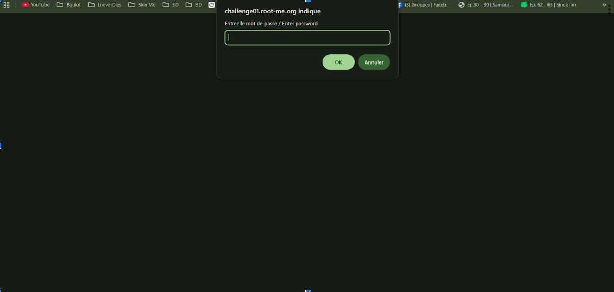

Articles Root Me : Javascript - Obfuscation 1
Nous arrivons sur une page contenant un bouton nous permetant de nous login nous demandant un Username et un Password.
Sans perdre de temps nous ouvrons le code source de cette page. Encore une fois, on peut clocker sur le lien du script JS.

Ce script contien une fonction permetant le login. Apres une lecture assidue de cette fonction, nous pouvons nous rendre compte quelle fonctionne grâce à la variable TheLists contenant deux mots : "GOD" et "HIDDEN". Il ne nous en faut pas plus en déduir que ce sont les idantifians recherchés. On devient bon là !